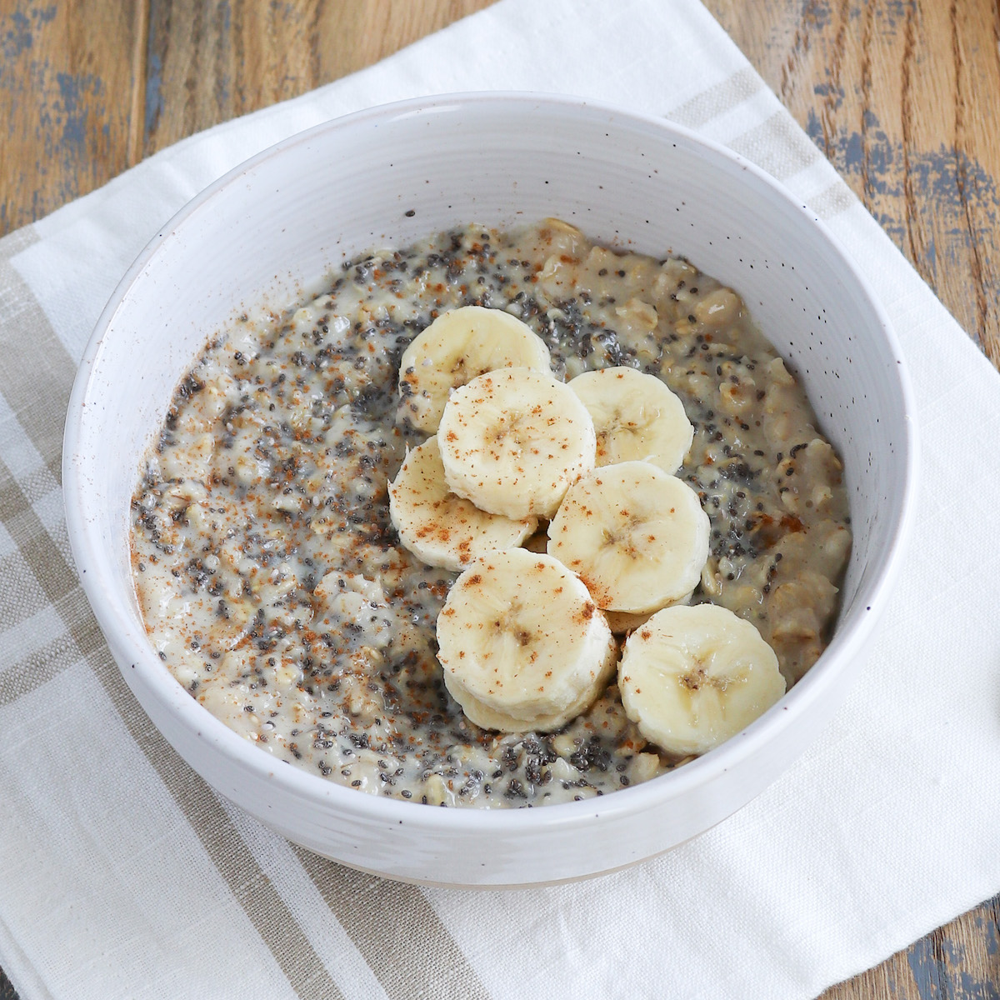

Banana Oatmeal

Description
Oatmeal is a great, healthy dish, full of carbohydrates that provides you
with a large dose of energy. That is why it is widely used as a breakfast
meal. This recipe makes it even tastier, thanks to the additional
ingredients that we will use. If you like both bananas & oatmeal, then you
should definitely try the recipe yourself. Enjoy!
Ingredients
- ½ cup of oat flakes
- ¾ cup of milk
- 1 whole banana
- 1 tablespoon of chia seeds
- 1 tablespoon of date flakes
- 1 teaspoon of liquid honey
Steps
-
Add the oat flakes and milk into a pot and heat it over a medium heat,
stirring it slowly all the time. Stir it until you notice that the oat
flakes absorbed enough milk, and the milk became more creamy than
liquid.
-
In the meantime, cut the banana into slices and then mash them in a bowl
that you'll serve the Oatmeal in.
-
Once you see that the oat flakes & milk are ready, transfer them from
the pot to the bowl with mashed bananas. Add chia seeds, date flakes and
liquid honey.
-
Mix it well and let it rest for 1 to 2 minutes before eating.